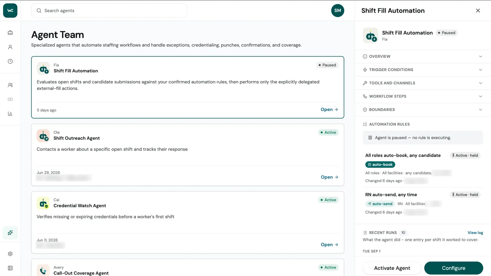
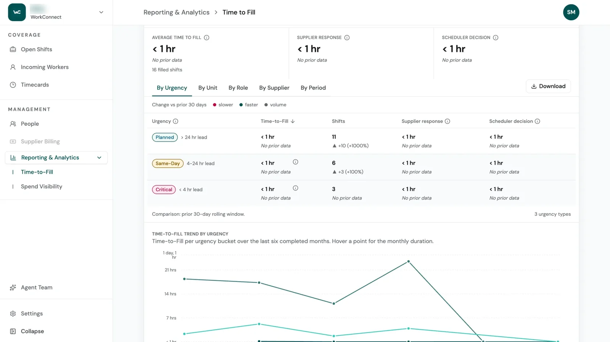

Web app · Healthcare staffing · 2026Web app · Personal de salud · 2026
Work Connect
A product that helps hospitals fill open nursing shifts, working inside the scheduling tool their staff already use. Un producto que ayuda a los hospitales a cubrir turnos de enfermería vacantes, dentro de la herramienta de programación que su personal ya usa.

- The problemEl problema
- When a nurse calls in sick, the shift has to be covered fast, and the usual options are slow and expensive: a round of phone calls, or an outside agency charging a premium.Cuando una enfermera avisa que está enferma, el turno debe cubrirse rápido, y las opciones habituales son lentas y caras: una ronda de llamadas o una agencia externa que cobra un recargo.
- What I didQué hice
- Designed the product experience: the scheduler-facing app and the flows for covering shifts, reviewing candidates, approving automation rules and reporting.Diseñé la experiencia del producto: la app para el personal de programación y los flujos para cubrir turnos, revisar candidatos, aprobar reglas de automatización y generar reportes.
- The productEl producto
- Spots an open shift the moment it appears, gives the facility a window to fill it internally and only then reaches outside suppliers, with automation that staff approve before it acts.Detecta un turno vacante en cuanto aparece, le da al centro un plazo para cubrirlo internamente y solo después recurre a proveedores externos, con una automatización que el personal aprueba antes de que actúe.
- RoleRol
- Product Designer (UX/UI)
- TeamEquipo
- Product teamEquipo de producto
- YearAño
- 2026
- IndustryIndustria
- Healthcare staffingPersonal de salud
- PlatformPlataforma
- Web appWeb app
The challengeEl reto
A nurse calls in sick, and the shift has to be covered within hoursUna enfermera avisa que está enferma y el turno debe cubrirse en pocas horas
The approachEl enfoque
The facility gets the first chance to fill its own shiftEl centro tiene la primera oportunidad de cubrir su propio turno
The coverage loopEl ciclo de cobertura
Seven steps from an empty slot to a covered shiftSiete pasos desde un hueco en el horario hasta un turno cubierto
- Notice the gapDetectar el vacío
- Apply the agreed rateAplicar la tarifa acordada
- Send to an outside supplierEnviar a un proveedor externo
- Review candidatesRevisar candidatos
- Book oneReservar uno
- Write it back to the scheduling toolRegistrarlo en la herramienta de programación
- Tell the managerAvisar al responsable
Covering an open shift by hand takes these seven steps; the product can take them overCubrir un turno vacante a mano lleva estos siete pasos; el producto puede encargarse de ellos
The shifts screen keeps the loop visible: open, receiving candidates and filled counts at the top, filters by facility, unit, role and status, and a requisition panel with the booked candidate and a status history of every step.La pantalla de turnos mantiene el ciclo a la vista: arriba, los turnos abiertos, recibiendo candidatos y cubiertos; filtros por centro, unidad, rol y estado; y un panel de requisición con el candidato reservado y el historial de cada paso.
The safeguardLa salvaguarda
Hospitals approve automation rules before they take effectLos hospitales aprueban las reglas de automatización antes de que entren en vigor
- Write the ruleEscribir la reglastaff describe it in plain languageel personal la describe en lenguaje sencillo
- See the interpretationVer la interpretaciónthe system shows how it understood the ruleel sistema muestra cómo entendió la regla
- Coordinator confirmsEl coordinador confirmaa person checks that interpretationuna persona revisa esa interpretación
- Rule takes effectLa regla entra en vigoronly after it was confirmedsolo después de ser confirmada

The scheduler appLa app de programación
Open shifts, incoming workers and coverage reports in one placeTurnos vacantes, personal entrante y reportes de cobertura en un solo lugar
Built for customers with several facilitiesPensado para clientes con varios centros


Next projectSiguiente proyecto
Crypto Marketplace
Read the case studyLeer el caso de estudio← Previous projectProyecto anterior · All projectsTodos los proyectos
Contact MeContáctame
Let's explore the exciting project you'd like to dive into!¡Hablemos del proyecto que tienes en mente y hagámoslo realidad!